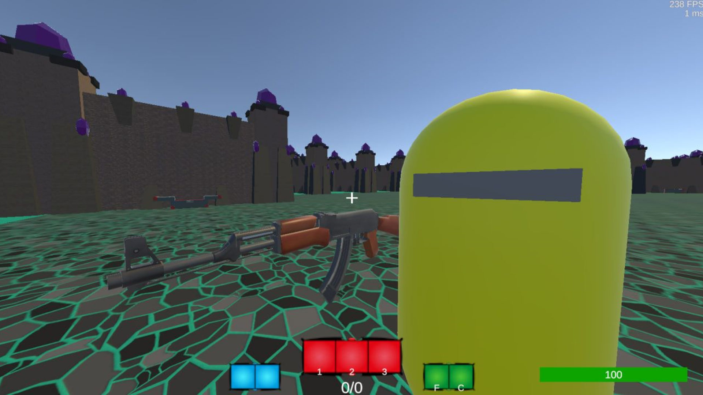

Ciao! Mi chiamo Antonio Schiavone, ho 19 anni e sono un Perito Informatico diplomato all'I.I.S. F. Corni di Modena.
Attualmente sono in cerca della mia prima esperienza lavorativa.
Ecco i principali progetti che ho creato nel corso degli anni:
HOMP: Highly Optimized Music Player
Creato per necessità di controllare la musica senza tasti multimediali della tastiera.
La feature principale è il supporto a scorciatoie da tastiera personalizzabili. Creato con C# e WPF per Windows.
Leeze.js
Mini-libreria in JavaScript per creare pagine Web semplici ma con un minimo di reattività.
Fa uso di attributi HTML custom per gestire i cambiamenti di stato.
Non ha bisogno di step compilazione, transpilazione o bundling, è un semplice script da aggiungere alle pagine HTML.
Ancora in sviluppo, ma potrà essere trovata in futuro qui.
High!Иess
Videogame multiplayer basato su Unity e C#. In sviluppo con Alberto e Nicolò, è attualmente in pausa. I 40 giocatori si trovano in un labirinto, con punti di spawn casuali, e devono riuscire a prendere un cristallo che si trova al centro del labirinto e uscirne.
e altri...
- Custom Notepad: piccolo blocco note per rimpiazzare il blocco note di Windows
- Custom Web Server: server web basico scritto in C# per hostare i miei progetti
- code-area: script JS per aggiungere editor/blocchi di codice con syntax highlighting
oltre alla marea di progetti non conclusi, con lo scopo di imparare un concetto o linguaggio.
Inoltre, mi piace sempre imparare nuovi linguaggi e tecnologie.
I linguaggi con cui ho più familiarità sono C#, Java, PHP e JavaScript.
So anche le basi di Python, C/C++, Rust e Swift.
Voglio imparare TypeScript, Kotlin, Elixir, OCaml, Go, Zig e Odin.
Mi ispirano anche Ruby, Objective-C, V e Lua.
Il mio primo linguaggio è stato VB.Net.
I miei editor di testo principali sono Visual Studio (per C#, WPF e WinForms) e Visual Studio Code.
In passato ho provato anche Emacs, NeoVim e Zed.
Di recente, ho iniziato a provare Helix.
Il mio obiettivo è quello di creare un editor per Windows e macOS.